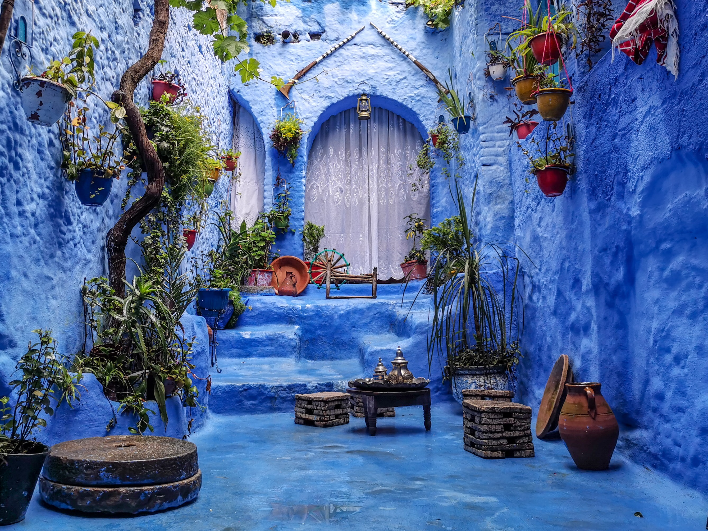
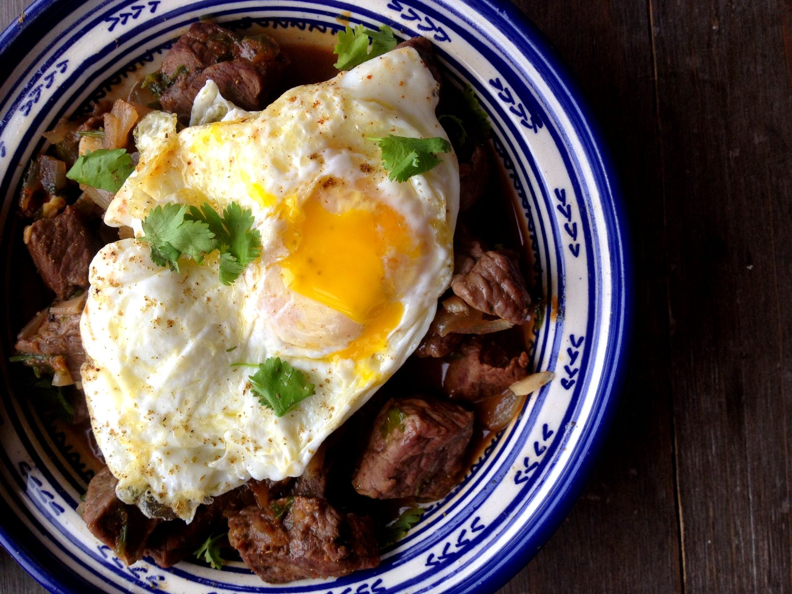
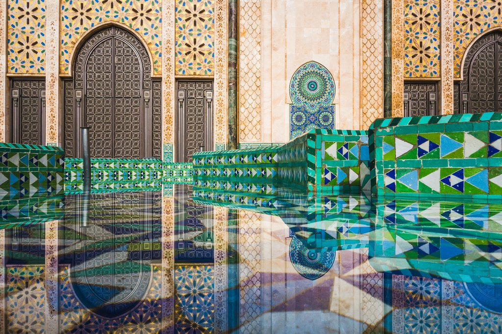
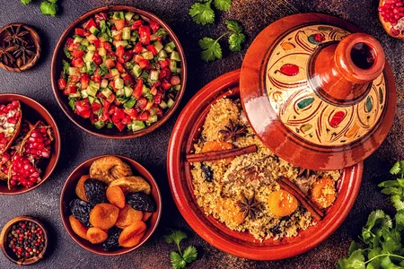
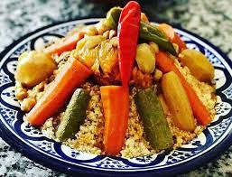
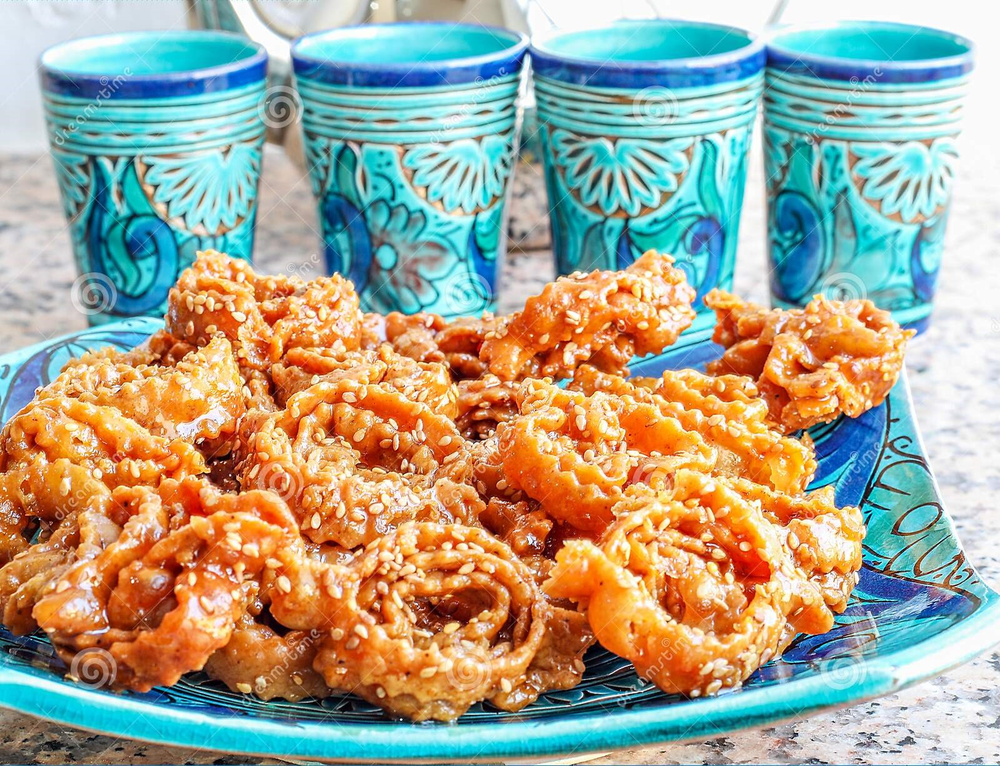
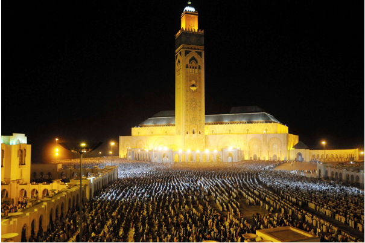
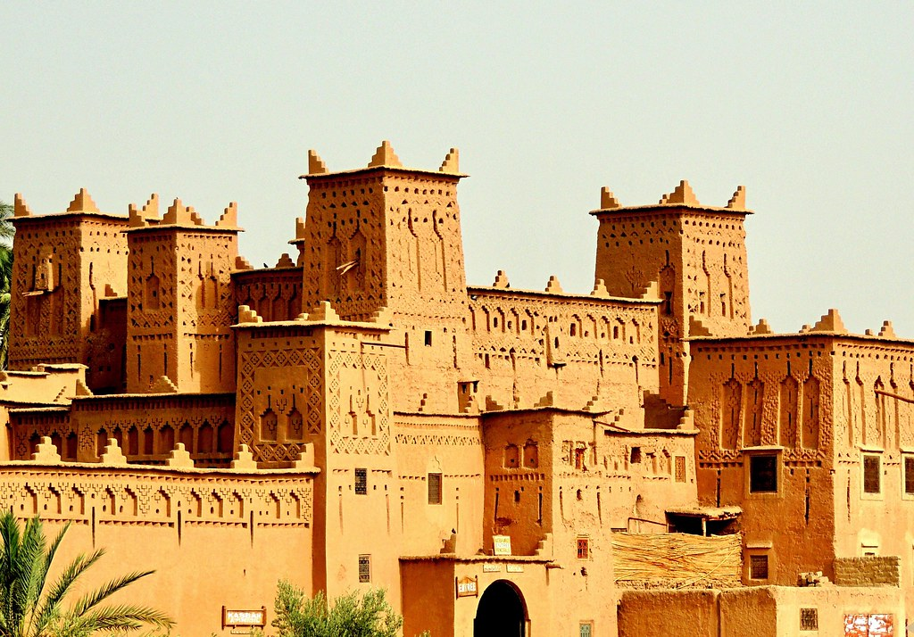

A free online visit to Morroco
Make unforgettable memories while you discover a whole new African culture
Various places
Delicious Food
Majestic Architecture
Various places
Morocco is a country unique in the variety of its natural resources. Mountain ranges, sandy beaches washed by the waves of the Mediterranean Sea
and the Atlantic Ocean, tiny bays among the rocks, endless expanses of golden dunes, emerald oases – Simply put, nature shows its entire splendor in this region.
Delicious food
Moroccan cuisine is considered one of the most important cuisines in the world. One of the reasons for its importance is its remarkable diversity of influences.
In Moroccan dishes, one can trace the country’s long history of colonizers and immigrants who have left their mark in more than one way
Tagine
 A dish which is slow-cooked savory stews,
typically made with sliced meat,
poultry or fish together with
vegetables or fruit. Spices, nuts
and dried fruits are also used.
Couscous
Is a Maghrebi dish of small steamed
granules of rolled durum wheat semolina
that is often served with a stew spooned
on top. Pearl millet, sorghum, bulgur, and
other cereals are sometimes cooked
in a similar way in other regions.
Chebakia
Is a pastry of Moroccan origin
made of strips of dough rolled to resemble
a rose,deep-fried until golden,
then coated with a syrup made
of honey andorange blossom water
and sprinkled with sesame.
Majestic Architecture
The country's diverse geography and long history, marked by successive waves of settlers through both migration and military conquest, are all reflected in its architecture.
This architectural heritage ranges from ancient Roman and Berber (Amazigh) sites to 20th-century colonial and modern architecture.What sets Morocco’s architecture apart is
not only its exceptional blend of different design elements but also the unique features of each of its traditional buildings.Mosques, riads, souks,
ramparts, kasbahs, palaces and medersas are all different types of buildings found throughout Morocco: they have different purposes and very different architectural designs.
Mosques
Mosques are arguably Morocco’s most
important structures. In every city, village,
or town no matter how small you will find at least one
mosque with a tall minaret towering over the city
Riads & Palace

Traditional homes and palaces in Morocco are called riads.
As private residences they were built with
seclusion in mind. They are focused inward with a courtyard
in the center which allow for both family privacy and
protection from Moroccan weather
Kasbahs
A type of medina, the kasbah is a fortified city built
for defensive purposes. Besides their extraordinary size,
kasbahs are quite impressive and were typically built
in harmony with their surroundings.
*See more legendary architecture while watching this short video please wait 20s so that the video starts.
For more videos about Morroco visit this channel Here